Learning Module 2 Security Market Indexes - Part 1: Introduction
Volume 5: Equity Investments
Learning Module 2 Security Market Indexes
Part 1/3: Introduction (PDF Pages 91–106)
Tập 5: Đầu tư Cổ phiếu (Volume 5: Equity Investments)
Học phần 2: Chỉ số Thị trường Chứng khoán (Learning Module 2: Security Market Indexes)
Phần 1/3: Giới thiệu (Introduction) (Trang PDF 91–106)
L E A R N I N G M O D U L E 2 Security Market Indexes
H Ọ C P H Ầ N 2 Chỉ số Thị trường Chứng khoán (Security Market Indexes)
by Paul D. Kaplan, PhD, CFA, and Dorothy C. Kelly, CFA.
bởi Paul D. Kaplan, PhD, CFA, và Dorothy C. Kelly, CFA.
Paul D. Kaplan, PhD, CFA, is at Morningstar (Canada). Dorothy C. Kelly, CFA, is at McIntire School of Commerce, University of Virginia (USA).
Paul D. Kaplan, PhD, CFA, làm việc tại Morningstar (Canada). Dorothy C. Kelly, CFA, làm việc tại Trường Thương mại McIntire, Đại học Virginia (Hoa Kỳ).
| LEARNI |
NG OUTCOMES |
|---|---|
| Mastery | The candidate should be able to: |
| describe a security market index | |
| calculate and interpret the value, price return, and total return of an index |
|
| describe the choices and issues in index construction and management |
|
| compare the different weighting methods used in index construction | |
| calculate and analyze the value and return of an index given its weighting method |
|
| describe rebalancing and reconstitution of an index | |
| describe uses of security market indexes | |
| describe types of equity indexes | |
| compare types of security market indexes | |
| describe types of fixed-income indexes | |
| describe indexes representing alternative investments |
| KẾT QUẢ HỌC TẬP (LEARNING OUTCOMES) | |
|---|---|
| Mức độ thành thạo (Mastery) | Ứng viên cần có khả năng: |
| mô tả một chỉ số thị trường chứng khoán (security market index) | |
| tính toán và diễn giải giá trị, tỷ suất sinh lợi giá (price return), và tổng tỷ suất sinh lợi (total return) của một chỉ số | |
| mô tả các lựa chọn và vấn đề trong việc xây dựng và quản lý chỉ số | |
| so sánh các phương pháp tính tỷ trọng (weighting methods) khác nhau được sử dụng trong xây dựng chỉ số | |
| tính toán và phân tích giá trị cũng như tỷ suất sinh lợi của một chỉ số dựa trên phương pháp tính tỷ trọng của nó | |
| mô tả việc tái cân bằng (rebalancing) và tái cấu trúc (reconstitution) của một chỉ số | |
| mô tả các công dụng của chỉ số thị trường chứng khoán | |
| mô tả các loại chỉ số cổ phiếu (equity indexes) | |
| so sánh các loại chỉ số thị trường chứng khoán | |
| mô tả các loại chỉ số thu nhập cố định (fixed-income indexes) | |
| mô tả các chỉ số đại diện cho các khoản đầu tư thay thế (alternative investments) |
INTRODUCTION
GIỚI THIỆU (INTRODUCTION)
Investors gather and analyze vast amounts of information about security markets on a continual basis. Because this work can be both time consuming and data intensive, investors often use a single measure that consolidates this information and reflects the performance of an entire security market.
Các nhà đầu tư liên tục thu thập và phân tích một lượng lớn thông tin về thị trường chứng khoán. Vì công việc này có thể vừa tốn thời gian vừa đòi hỏi nhiều dữ liệu, các nhà đầu tư thường sử dụng một thước đo duy nhất để hợp nhất thông tin này và phản ánh thành quả hoạt động của toàn bộ một thị trường chứng khoán.
Security market indexes were first introduced as a simple measure to reflect the performance of the US stock market. Since then, security market indexes have evolved into important multi-purpose tools that help investors track the performance of various security markets, estimate risk, and evaluate the performance of investment managers. They also form the basis for new investment products.
Các chỉ số thị trường chứng khoán lần đầu tiên được giới thiệu như một thước đo đơn giản nhằm phản ánh thành quả của thị trường chứng khoán Hoa Kỳ. Kể từ đó, các chỉ số thị trường chứng khoán đã phát triển thành những công cụ đa năng quan trọng giúp các nhà đầu tư theo dõi thành quả của các thị trường chứng khoán khác nhau, ước tính rủi ro, và đánh giá thành quả hoạt động của các nhà quản lý đầu tư. Chúng cũng tạo thành nền tảng cho các sản phẩm đầu tư mới.
in·dex , noun ( pl. in·dex·es or in·di·ces ) Latin indic-, index, from indicare to indicate: an indicator, sign, or measure of something.
in·dex (chỉ số), danh từ (số nhiều in·dex·es hoặc in·di·ces) tiếng Latinh indic-, index, bắt nguồn từ indicare nghĩa là chỉ ra: một chỉ báo, dấu hiệu, hoặc thước đo của một thứ gì đó.
ORIGIN OF MARKET INDEXES
NGUỒN GỐC CỦA CÁC CHỈ SỐ THỊ TRƯỜNG (ORIGIN OF MARKET INDEXES)
Investors had access to regularly published data on individual security prices in London as early as 1698, but nearly 200 years passed before they had access to a simple indicator to reflect security market information. To give readers a sense of how the US stock market in general performed on a given day, publishers Charles H. Dow and Edward D. Jones introduced the Dow Jones Average, the world’s first security market index, in 1884. The index, which appeared in The Customers’ Afternoon Letter , consisted of the stocks of nine railroads and two industrial companies. It eventually became the Dow Jones Transportation Average. Convinced that industrial companies, rather than railroads, would be “the great speculative market” of the future, Dow and Jones introduced a second index in May 1896—the Dow Jones Industrial Average (DJIA). It had an initial value of 40.94 and consisted of 12 stocks from major US industries. Today, investors can choose from among thousands of indexes to measure and monitor different security markets and asset classes.
Các nhà đầu tư đã có quyền tiếp cận dữ liệu được công bố định kỳ về giá của từng chứng khoán riêng lẻ tại London từ năm 1698, nhưng gần 200 năm đã trôi qua trước khi họ có được một chỉ báo đơn giản để phản ánh thông tin thị trường chứng khoán. Để mang lại cho độc giả cảm nhận về cách thị trường chứng khoán Hoa Kỳ nói chung vận hành trong một ngày nhất định, hai nhà xuất bản Charles H. Dow và Edward D. Jones đã giới thiệu Chỉ số Bình quân Dow Jones (Dow Jones Average), chỉ số thị trường chứng khoán đầu tiên trên thế giới, vào năm 1884. Chỉ số này, xuất hiện trên tờ The Customers’ Afternoon Letter, bao gồm cổ phiếu của chín công ty đường sắt và hai công ty công nghiệp. Về sau, nó trở thành Chỉ số Bình quân Vận tải Dow Jones (Dow Jones Transportation Average). Tin chắc rằng các công ty công nghiệp, chứ không phải đường sắt, sẽ là “thị trường đầu cơ vĩ đại” của tương lai, Dow và Jones đã giới thiệu chỉ số thứ hai vào tháng 5 năm 1896—Chỉ số Bình quân Công nghiệp Dow Jones (Dow Jones Industrial Average – DJIA). Chỉ số này có giá trị ban đầu là 40,94 và bao gồm 12 cổ phiếu từ các ngành công nghiệp chính của Hoa Kỳ. Ngày nay, các nhà đầu tư có thể lựa chọn trong số hàng ngàn chỉ số để đo lường và giám sát các thị trường chứng khoán cũng như các loại tài sản (asset classes) khác nhau.
This reading is organized as follows. Section 2 defines a security market index and explains how to calculate the price return and total return of an index for a single period and over multiple periods. Section 3 describes how indexes are constructed and managed. Section 4 discusses the use of market indexes. Sections 5, 6, and 7 discuss various types of indexes, and the final section summarizes the reading. Practice problems follow the conclusions and summary.
Bài đọc này được tổ chức như sau. Phần 2 định nghĩa chỉ số thị trường chứng khoán và giải thích cách tính tỷ suất sinh lợi giá và tổng tỷ suất sinh lợi của một chỉ số cho một kỳ đơn lẻ và qua nhiều kỳ. Phần 3 mô tả cách các chỉ số được xây dựng và quản lý. Phần 4 thảo luận về việc sử dụng các chỉ số thị trường. Các phần 5, 6 và 7 thảo luận về các loại chỉ số khác nhau, và phần cuối cùng tóm tắt bài đọc. Các bài tập thực hành nằm ở phần tiếp theo sau phần kết luận và tóm tắt.
2 INDEX DEFINITION AND CALCULATIONS OF VALUE AND RETURNS
2 ĐỊNH NGHĨA CHỈ SỐ VÀ CÁCH TÍNH GIÁ TRỊ CŨNG NHƯ TỶ SUẤT SINH LỢI (INDEX DEFINITION AND CALCULATIONS OF VALUE AND RETURNS)
describe a security market index
mô tả một chỉ số thị trường chứng khoán (security market index)
calculate and interpret the value, price return, and total return of an index
tính toán và diễn giải giá trị, tỷ suất sinh lợi giá (price return), và tổng tỷ suất sinh lợi (total return) của một chỉ số
A security market index represents a given security market, market segment, or asset class. Most indexes are constructed as portfolios of marketable securities.
Một chỉ số thị trường chứng khoán (security market index) đại diện cho một thị trường chứng khoán, một phân khúc thị trường, hoặc một loại tài sản nhất định. Hầu hết các chỉ số được xây dựng dưới dạng các danh mục đầu tư gồm các chứng khoán có thể giao dịch trên thị trường (marketable securities).
The value of an index is calculated on a regular basis using either the actual or estimated market prices of the individual securities, known as constituent securities , within the index. For each security market index, investors may encounter two versions
Giá trị của một chỉ số được tính toán định kỳ bằng cách sử dụng giá thị trường thực tế hoặc ước tính của các chứng khoán riêng lẻ, được gọi là chứng khoán thành phần (constituent securities), bên trong chỉ số. Đối với mỗi chỉ số thị trường chứng khoán, các nhà đầu tư có thể bắt gặp hai phiên bản
of the same index (i.e., an index with identical constituent securities and weights): one version based on price return and one version based on total return. As the name suggests, a price return index , also known as a price index , reflects only the prices of the constituent securities within the index. A total return index , in contrast, reflects not only the prices of the constituent securities but also the reinvestment of all income received since inception.
của cùng một chỉ số (tức là một chỉ số có các chứng khoán thành phần và tỷ trọng giống hệt nhau): một phiên bản dựa trên tỷ suất sinh lợi giá (price return) và một phiên bản dựa trên tổng tỷ suất sinh lợi (total return). Đúng như tên gọi, chỉ số tỷ suất sinh lợi giá (price return index), còn được gọi là chỉ số giá (price index), chỉ phản ánh giá của các chứng khoán thành phần trong chỉ số. Ngược lại, chỉ số tổng tỷ suất sinh lợi (total return index) phản ánh không chỉ giá của các chứng khoán thành phần mà còn cả việc tái đầu tư tất cả thu nhập nhận được kể từ khi thành lập chỉ số.
At inception, the values of the price and total return versions of an index are equal. As time passes, however, the value of the total return index, which includes the reinvestment of all dividends and/or interest received, will exceed the value of the price return index by an increasing amount. A look at how the values of each version are calculated over multiple periods illustrates why.
Tại thời điểm thành lập (inception), giá trị của phiên bản tỷ suất sinh lợi giá và phiên bản tổng tỷ suất sinh lợi của một chỉ số là bằng nhau. Tuy nhiên, khi thời gian trôi qua, giá trị của chỉ số tổng tỷ suất sinh lợi, vốn bao gồm việc tái đầu tư tất cả cổ tức và/hoặc tiền lãi nhận được, sẽ vượt quá giá trị của chỉ số tỷ suất sinh lợi giá với mức chênh lệch ngày càng tăng. Việc xem xét cách tính giá trị của từng phiên bản qua nhiều kỳ sẽ minh họa lý do tại sao.
The value of a price return index is calculated as:
Giá trị của một chỉ số tỷ suất sinh lợi giá được tính như sau:
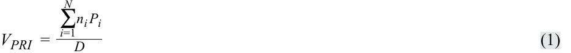
where
trong đó
VPRI = the value of the price return index
$V_{PRI}$ = giá trị của chỉ số tỷ suất sinh lợi giá (value of the price return index)
-
ni = the number of units of constituent security i held in the index portfolio
-
N = the number of constituent securities in the index
-
Pi = the unit price of constituent security i
-
D = the value of the divisor
-
$n_i$ = số lượng đơn vị của chứng khoán thành phần $i$ được nắm giữ trong danh mục chỉ số
-
$N$ = số lượng chứng khoán thành phần trong chỉ số
-
$P_i$ = đơn giá của chứng khoán thành phần $i$
-
$D$ = giá trị của ước số (divisor)
The divisor is a number initially chosen at inception. It is frequently chosen so that the price index has a convenient initial value, such as 1,000. The index provider then adjusts the value of the divisor as necessary to avoid changes in the index value that are unrelated to changes in the prices of its constituent securities. For example, when changing index constituents, the index provider may adjust the divisor so that the value of the index with the new constituents equals the value of the index prior to the changes.
Ước số (divisor) là một con số được chọn ban đầu tại thời điểm thành lập. Nó thường được chọn sao cho chỉ số giá có một giá trị ban đầu thuận tiện, chẳng hạn như 1.000. Sau đó, nhà cung cấp chỉ số (index provider) sẽ điều chỉnh giá trị của ước số khi cần thiết để tránh những thay đổi trong giá trị chỉ số không liên quan đến những thay đổi trong giá của các chứng khoán thành phần. Ví dụ, khi thay đổi các chứng khoán thành phần của chỉ số, nhà cung cấp chỉ số có thể điều chỉnh ước số sao cho giá trị của chỉ số với các chứng khoán thành phần mới bằng với giá trị của chỉ số trước khi có sự thay đổi.
Index return calculations, like calculations of investment portfolio returns, may measure price return or total return. Price return measures only price appreciation or percentage change in price. Total return measures price appreciation plus interest, dividends, and other distributions.
Việc tính toán tỷ suất sinh lợi của chỉ số, giống như tính toán tỷ suất sinh lợi của danh mục đầu tư, có thể đo lường tỷ suất sinh lợi giá hoặc tổng tỷ suất sinh lợi. Tỷ suất sinh lợi giá (Price return) chỉ đo lường sự tăng giá (price appreciation) hoặc phần trăm thay đổi của giá. Tổng tỷ suất sinh lợi (Total return) đo lường sự tăng giá cộng với tiền lãi, cổ tức và các khoản phân phối khác.
Calculation of Single-Period Returns
Tính toán Tỷ suất sinh lợi Đơn kỳ (Calculation of Single-Period Returns)
For a security market index, price return can be calculated in two ways: either the percentage change in value of the price return index, or the weighted average of price returns of the constituent securities. The price return of an index can be expressed as:
Đối với một chỉ số thị trường chứng khoán, tỷ suất sinh lợi giá có thể được tính theo hai cách: phần trăm thay đổi giá trị của chỉ số tỷ suất sinh lợi giá, hoặc trung bình có trọng số của tỷ suất sinh lợi giá của các chứng khoán thành phần. Tỷ suất sinh lợi giá của một chỉ số có thể được biểu diễn như sau:
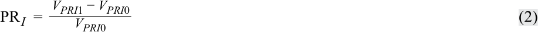
where
trong đó
- PR I = the price return of the index portfolio (as a decimal number, i.e., 12 percent is 0.12)
- $PR_I$ = tỷ suất sinh lợi giá của danh mục chỉ số (dưới dạng số thập phân, tức là 12 phần trăm là 0,12)
VPRI 1 = the value of the price return index at the end of the period
$V_{PRI1}$ = giá trị của chỉ số tỷ suất sinh lợi giá vào cuối kỳ
VPRI 0 = the value of the price return index at the beginning of the period
$V_{PRI0}$ = giá trị của chỉ số tỷ suất sinh lợi giá vào đầu kỳ
Similarly, the price return of each constituent security can be expressed as:
Tương tự, tỷ suất sinh lợi giá của từng chứng khoán thành phần có thể được biểu diễn như sau:
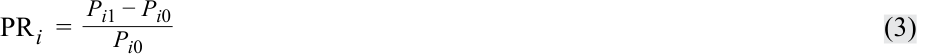
where
trong đó
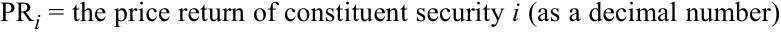
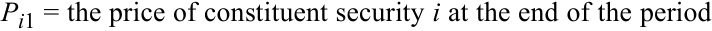
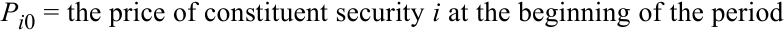
Because the price return of the index equals the weighted average of price returns of the individual securities, we can write:
Bởi vì tỷ suất sinh lợi giá của chỉ số bằng trung bình có trọng số của tỷ suất sinh lợi giá của các chứng khoán riêng lẻ, chúng ta có thể viết:
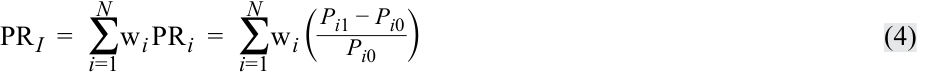
where:
trong đó:
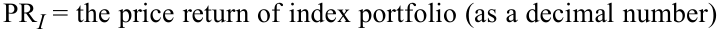
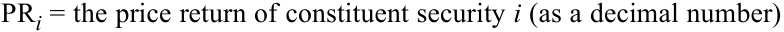
-
N = the number of individual securities in the index
-
w i = the weight of security i (the fraction of the index portfolio allocated to security i )
-
Pi 1 = the price of constituent security i at the end of the period
-
Pi 0 = the price of constituent security i at the beginning of the period
-
$N$ = số lượng chứng khoán riêng lẻ trong chỉ số
-
$w_i$ = tỷ trọng của chứng khoán $i$ (tỷ phần của danh mục chỉ số được phân bổ cho chứng khoán $i$)
-
$P_{i1}$ = giá của chứng khoán thành phần $i$ vào cuối kỳ
-
$P_{i0}$ = giá của chứng khoán thành phần $i$ vào đầu kỳ
Equation 4 can be rewritten simply as:
Phương trình 4 có thể được viết lại một cách đơn giản như sau:
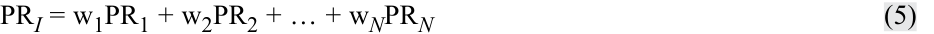
where
trong đó
-
PR I = the price return of index portfolio (as a decimal number)
-
PR i = the price return of constituent security i (as a decimal number)
-
w i = the weight of security i (the fraction of the index portfolio allocated to security i )
-
N = the number of securities in the index
-
$PR_I$ = tỷ suất sinh lợi giá của danh mục chỉ số (dưới dạng số thập phân)
-
$PR_i$ = tỷ suất sinh lợi giá của chứng khoán thành phần $i$ (dưới dạng số thập phân)
-
$w_i$ = tỷ trọng của chứng khoán $i$ (tỷ phần của danh mục chỉ số được phân bổ cho chứng khoán $i$)
-
$N$ = số lượng chứng khoán trong chỉ số
Total return measures price appreciation plus interest, dividends, and other distributions. Thus, the total return of an index is the price appreciation, or change in the value of the price return index, plus income (dividends and/or interest) over the period, expressed as a percentage of the beginning value of the price return index. The total return of an index can be expressed as:
Tổng tỷ suất sinh lợi đo lường sự tăng giá cộng với tiền lãi, cổ tức và các khoản phân phối khác. Do đó, tổng tỷ suất sinh lợi (total return) của một chỉ số là mức tăng giá, hay sự thay đổi trong giá trị của chỉ số tỷ suất sinh lợi giá, cộng với thu nhập (cổ tức và/hoặc tiền lãi) trong kỳ, được biểu thị bằng tỷ lệ phần trăm so với giá trị đầu kỳ của chỉ số tỷ suất sinh lợi giá. Tổng tỷ suất sinh lợi của một chỉ số có thể được biểu diễn như sau:
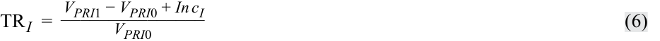
where
trong đó
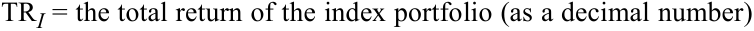
-
VPRI 1= the value of the price return index at the end of the period
-
VPRI 0 = the value of the price return index at the beginning of the period
-
Inc I = the total income (dividends and/or interest) from all securities in the index held over the period
-
$V_{PRI1}$ = giá trị của chỉ số tỷ suất sinh lợi giá vào cuối kỳ
-
$V_{PRI0}$ = giá trị của chỉ số tỷ suất sinh lợi giá vào đầu kỳ
-
$Inc_I$ = tổng thu nhập (cổ tức và/hoặc tiền lãi) từ tất cả các chứng khoán trong chỉ số được nắm giữ trong kỳ
The total return of an index can also be calculated as the weighted average of total returns of the constituent securities. The total return of each constituent security in the index is calculated as:
Tổng tỷ suất sinh lợi của một chỉ số cũng có thể được tính bằng trung bình có trọng số của tổng tỷ suất sinh lợi của các chứng khoán thành phần. Tổng tỷ suất sinh lợi của mỗi chứng khoán thành phần trong chỉ số được tính như sau:
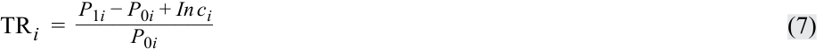
where
trong đó
TR i = the total return of constituent security i (as a decimal number)
$TR_i$ = tổng tỷ suất sinh lợi của chứng khoán thành phần $i$ (dưới dạng số thập phân)
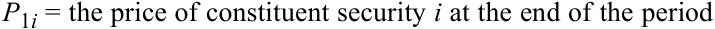
P 0 i = the price of constituent security i at the beginning of the period
$P_{0i}$ = giá của chứng khoán thành phần $i$ vào đầu kỳ
Inc i = the total income (dividends and/or interest) from security i over the period
$Inc_i$ = tổng thu nhập (cổ tức và/hoặc tiền lãi) từ chứng khoán $i$ trong kỳ
Because the total return of an index can be calculated as the weighted average of total returns of the constituent securities, we can express total return as:
Bởi vì tổng tỷ suất sinh lợi của một chỉ số có thể được tính bằng trung bình có trọng số của tổng tỷ suất sinh lợi của các chứng khoán thành phần, chúng ta có thể biểu diễn tổng tỷ suất sinh lợi như sau:
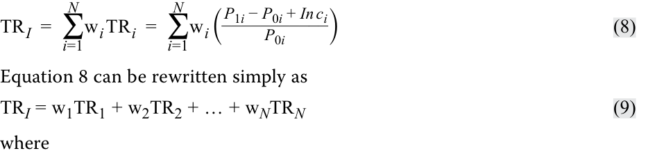
TR I = the total return of the index portfolio (as a decimal number)
Phương trình 8 có thể được viết lại một cách đơn giản như sau:
trong đó
$TR_I$ = tổng tỷ suất sinh lợi của danh mục chỉ số (dưới dạng số thập phân)
-
TR i = the total return of constituent security i (as a decimal number)
-
w i = the weight of security i (the fraction of the index portfolio allocated to security i )
-
N = the number of securities in the index
-
$TR_i$ = tổng tỷ suất sinh lợi của chứng khoán thành phần $i$ (dưới dạng số thập phân)
-
$w_i$ = tỷ trọng của chứng khoán $i$ (tỷ phần của danh mục chỉ số được phân bổ cho chứng khoán $i$)
-
$N$ = số lượng chứng khoán trong chỉ số
Calculation of Index Values over Multiple Time Periods
Tính toán Giá trị Chỉ số qua Nhiều Kỳ (Calculation of Index Values over Multiple Time Periods)
The calculation of index values over multiple time periods requires geometrically linking the series of index returns. With a series of price returns for an index, we can calculate the value of the price return index with the following equation:
Việc tính toán giá trị chỉ số qua nhiều kỳ đòi hỏi phải liên kết hình học (geometrically linking) chuỗi tỷ suất sinh lợi của chỉ số. Với một chuỗi tỷ suất sinh lợi giá của một chỉ số, chúng ta có thể tính giá trị của chỉ số tỷ suất sinh lợi giá bằng phương trình sau:
V PRIT = V PRI 0(1 + PR I 1)(1 + PR I 2)…(1 + PR IT )
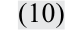
where
trong đó
-
V PRI 0 = the value of the price return index at inception
-
V PRIT = the value of the price return index at time t
-
PR IT = the price return (as a decimal number) on the index over period t , t = 1, 2, …, T
-
$V_{PRI0}$ = giá trị của chỉ số tỷ suất sinh lợi giá tại thời điểm thành lập
-
$V_{PRIT}$ = giá trị của chỉ số tỷ suất sinh lợi giá tại thời điểm $T$
-
$PR_{It}$ = tỷ suất sinh lợi giá (dưới dạng số thập phân) của chỉ số trong kỳ $t$, $t = 1, 2, \dots, T$
For an index with an inception value set to 1,000 and price returns of 5 percent and 3 percent for Periods 1 and 2 respectively, the values of the price return index would be calculated as follows:
Đối với một chỉ số có giá trị khi thành lập được đặt bằng 1.000 và tỷ suất sinh lợi giá lần lượt là 5 phần trăm và 3 phần trăm cho Kỳ 1 và Kỳ 2, giá trị của chỉ số tỷ suất sinh lợi giá sẽ được tính như sau:
| Period | Return (%) | Calculation | Ending Value |
|---|---|---|---|
| 0 | 1,000(1.00) | 1,000.00 | |
| 1 | 5.00 | 1,000(1.05) | 1,050.00 |
| 2 | 3.00 | 1,000(1.05)(1.03) | 1,081.50 |
| Kỳ (Period) | Tỷ suất sinh lợi (Return) (%) | Phép tính (Calculation) | Giá trị cuối kỳ (Ending Value) |
|---|---|---|---|
| 0 | 1.000(1,00) | 1.000,00 | |
| 1 | 5,00 | 1.000(1,05) | 1.050,00 |
| 2 | 3,00 | 1.000(1,05)(1,03) | 1.081,50 |
Similarly, the series of total returns for an index is used to calculate the value of the total return index with the following equation:
Tương tự, chuỗi tổng tỷ suất sinh lợi của một chỉ số được sử dụng để tính giá trị của chỉ số tổng tỷ suất sinh lợi bằng phương trình sau:
V TRIT = V TRI 0(1 + TR I 1)(1 + TR I 2)…(1 + TR IT ) ~~(11)~~
where
trong đó
-
V TRI 0 = the value of the index at inception
-
V TRIT = the value of the total return index at time t
-
TR IT = the total return (as a decimal number) on the index over period t , t = 1, 2, …, T
-
$V_{TRI0}$ = giá trị của chỉ số tại thời điểm thành lập
-
$V_{TRIT}$ = giá trị của chỉ số tổng tỷ suất sinh lợi tại thời điểm $T$
-
$TR_{It}$ = tổng tỷ suất sinh lợi (dưới dạng số thập phân) của chỉ số trong kỳ $t$, $t = 1, 2, \dots, T$
Suppose that the same index yields an additional 1.5 percent return from income in Period 1 and an additional 2.0 percent return from income in Period 2, bringing the total returns for Periods 1 and 2, respectively, to 6.5 percent and 5 percent. The values of the total return index would be calculated as follows:
Giả sử rằng cùng chỉ số đó mang lại thêm 1,5 phần trăm tỷ suất sinh lợi từ thu nhập trong Kỳ 1 và thêm 2,0 phần trăm tỷ suất sinh lợi từ thu nhập trong Kỳ 2, nâng tổng tỷ suất sinh lợi cho Kỳ 1 và Kỳ 2 lần lượt lên 6,5 phần trăm và 5 phần trăm. Giá trị của chỉ số tổng tỷ suất sinh lợi sẽ được tính như sau:
| Period | Return (%) | Calculation | Ending Value |
|---|---|---|---|
| 0 | 1,000(1.00) | 1,000.00 | |
| 1 | 6.50 | 1,000(1.065) | 1,065.00 |
| 2 | 5.00 | 1,000(1.065)(1.05) | 1,118.25 |
| Kỳ (Period) | Tỷ suất sinh lợi (Return) (%) | Phép tính (Calculation) | Giá trị cuối kỳ (Ending Value) |
|---|---|---|---|
| 0 | 1.000(1,00) | 1.000,00 | |
| 1 | 6,50 | 1.000(1,065) | 1.065,00 |
| 2 | 5,00 | 1.000(1,065)(1,05) | 1.118,25 |
As illustrated above, as time passes, the value of the total return index, which includes the reinvestment of all dividends and/or interest received, exceeds the value of the price return index by an increasing amount.
Như được minh họa ở trên, khi thời gian trôi qua, giá trị của chỉ số tổng tỷ suất sinh lợi, vốn bao gồm việc tái đầu tư tất cả cổ tức và/hoặc tiền lãi nhận được, vượt quá giá trị của chỉ số tỷ suất sinh lợi giá với mức chênh lệch ngày càng tăng.
3
3
INDEX CONSTRUCTION
XÂY DỰNG CHỈ SỐ (INDEX CONSTRUCTION)
describe the choices and issues in index construction and management
mô tả các lựa chọn và vấn đề trong việc xây dựng và quản lý chỉ số
compare the different weighting methods used in index construction calculate and analyze the value and return of an index given its weighting method
so sánh các phương pháp tính tỷ trọng (weighting methods) khác nhau được sử dụng trong xây dựng chỉ số
Constructing and managing a security market index is similar to constructing and managing a portfolio of securities. Index providers must decide the following:
tính toán và phân tích giá trị cũng như tỷ suất sinh lợi của một chỉ số dựa trên phương pháp tính tỷ trọng của nó
1. Which target market should the index represent?
Việc xây dựng và quản lý một chỉ số thị trường chứng khoán tương tự như việc xây dựng và quản lý một danh mục đầu tư chứng khoán. Các nhà cung cấp chỉ số phải quyết định những vấn đề sau:
2. Which securities should be selected from that target market?
1. Chỉ số nên đại diện cho thị trường mục tiêu (target market) nào?
2. Những chứng khoán nào nên được lựa chọn từ thị trường mục tiêu đó?
3. How much weight should be allocated to each security in the index?
3. Nên phân bổ bao nhiêu tỷ trọng cho mỗi chứng khoán trong chỉ số?
4. When should the index be rebalanced?
4. Khi nào chỉ số nên được tái cân bằng (rebalanced)?
5. When should the security selection and weighting decision be re-examined?
5. Khi nào quyết định lựa chọn chứng khoán và phân bổ tỷ trọng nên được xem xét lại?
Target Market and Security Selection
Thị trường Mục tiêu và Lựa chọn Chứng khoán (Target Market and Security Selection)
The first decision in index construction is identifying the target market, market segment, or asset class that the index is intended to represent. The target market may be defined very broadly or narrowly. It may be based on asset class (e.g., equities, fixed income, real estate, commodities, hedge funds); geographic region (e.g., Japan,
Quyết định đầu tiên trong việc xây dựng chỉ số là xác định thị trường mục tiêu, phân khúc thị trường, hoặc loại tài sản mà chỉ số đó dự định đại diện. Thị trường mục tiêu có thể được định nghĩa rất rộng hoặc rất hẹp. Nó có thể dựa trên loại tài sản (ví dụ: cổ phiếu, thu nhập cố định, bất động sản, hàng hóa, quỹ phòng hộ); khu vực địa lý (ví dụ: Nhật Bản,
South Africa, Latin America, Europe); the exchange on which the securities are traded (e.g., Shanghai, Toronto, Tokyo), and/or other characteristics (e.g., economic sector, company size, investment style, duration, or credit quality).
Nam Phi, Mỹ Latinh, Châu Âu); sàn giao dịch nơi các chứng khoán được giao dịch (ví dụ: Thượng Hải, Toronto, Tokyo), và/hoặc các đặc điểm khác (ví dụ: ngành kinh tế, quy mô công ty, phong cách đầu tư, thời lượng [duration], hoặc chất lượng tín dụng).
The target market determines the investment universe and the securities available for inclusion in the index. Once the investment universe is identified, the number of securities and the specific securities to include in the index must be determined. The constituent securities could be nearly all those in the target market or a representative sample of the target market. Some equity indexes, such as the S&P 500 Index and the FTSE 100, fix the number of securities included in the index and indicate this number in the name of the index. Other indexes allow the number of securities to vary to reflect changes in the target market or to maintain a certain percentage of the target market. For example, the Tokyo Stock Price Index (TOPIX) represents and includes all of the largest stocks, known as the First Section, listed on the Tokyo Stock Exchange. To be included in the First Section—and thus the TOPIX—stocks must meet certain criteria, such as the number of shares outstanding, the number of shareholders, and market capitalization. Stocks that no longer meet the criteria are removed from the First Section and also the TOPIX. Objective or mechanical rules determine the constituent securities of most, but not all, indexes. The S&P Bombay Stock Exchange Sensitive Index, also called the S&P BSE SENSEX and the S&P 500, for example, use a selection committee and more subjective decision-making rules to determine constituent securities.
Thị trường mục tiêu quyết định vũ trụ đầu tư (investment universe) và các chứng khoán hiện có để đưa vào chỉ số. Một khi vũ trụ đầu tư được xác định, số lượng chứng khoán và các chứng khoán cụ thể được đưa vào chỉ số phải được xác định. Các chứng khoán thành phần có thể là gần như tất cả các chứng khoán trong thị trường mục tiêu hoặc một mẫu đại diện của thị trường mục tiêu. Một số chỉ số cổ phiếu, chẳng hạn như Chỉ số S&P 500 và FTSE 100, cố định số lượng chứng khoán được đưa vào chỉ số và thể hiện con số này ngay trong tên của chỉ số. Các chỉ số khác cho phép số lượng chứng khoán thay đổi để phản ánh những thay đổi trên thị trường mục tiêu hoặc để duy trì một tỷ lệ phần trăm nhất định của thị trường mục tiêu. Ví dụ, Chỉ số Giá Cổ phiếu Tokyo (Tokyo Stock Price Index – TOPIX) đại diện và bao gồm tất cả các cổ phiếu lớn nhất, được gọi là Khu vực Một (First Section), được niêm yết trên Sàn Giao dịch Chứng khoán Tokyo. Để được đưa vào Khu vực Một—và do đó là vào TOPIX—các cổ phiếu phải đáp ứng các tiêu chí nhất định, chẳng hạn như số lượng cổ phiếu đang lưu hành, số lượng cổ đông, và vốn hóa thị trường. Các cổ phiếu không còn đáp ứng các tiêu chí này sẽ bị loại khỏi Khu vực Một và đồng thời bị loại khỏi TOPIX. Các quy tắc khách quan hoặc cơ học xác định các chứng khoán thành phần của hầu hết, nhưng không phải tất cả, các chỉ số. Ví dụ, Chỉ số Nhạy cảm của Sàn Giao dịch Chứng khoán Bombay S&P, còn được gọi là S&P BSE SENSEX, và S&P 500 sử dụng một ủy ban tuyển chọn và các quy tắc ra quyết định mang tính chủ quan hơn để xác định các chứng khoán thành phần.
Index Weighting
Tính Tỷ trọng Chỉ số (Index Weighting)
The weighting decision determines how much of each security to include in the index and has a substantial impact on an index’s value. Index providers use a number of methods to weight the constituent securities in an index. Indexes can be price weighted, equal weighted, market-capitalization weighted, or fundamentally weighted. Each weighting method has its advantages and disadvantages.
Quyết định phân bổ tỷ trọng xác định số lượng của mỗi chứng khoán được đưa vào chỉ số và có tác động đáng kể đến giá trị của chỉ số. Các nhà cung cấp chỉ số sử dụng một số phương pháp để tính tỷ trọng cho các chứng khoán thành phần trong một chỉ số. Các chỉ số có thể được tính tỷ trọng theo giá (price weighted), tính tỷ trọng đều (equal weighted), tính tỷ trọng theo vốn hóa thị trường (market-capitalization weighted), hoặc tính tỷ trọng theo yếu tố cơ bản (fundamentally weighted). Mỗi phương pháp tính tỷ trọng đều có những ưu điểm và nhược điểm riêng.
Price Weighting
Tính Tỷ trọng theo Giá (Price Weighting)
The simplest method to weight an index and the one used by Charles Dow to construct the Dow Jones Industrial Average is price weighting . In price weighting, the weight on each constituent security is determined by dividing its price by the sum of all the prices of the constituent securities. The weight is calculated using the following formula:
Phương pháp đơn giản nhất để tính tỷ trọng cho một chỉ số và là phương pháp được Charles Dow sử dụng để xây dựng Chỉ số Bình quân Công nghiệp Dow Jones là tính tỷ trọng theo giá (price weighting). Trong phương pháp tính tỷ trọng theo giá, tỷ trọng của mỗi chứng khoán thành phần được xác định bằng cách chia giá của nó cho tổng giá của tất cả các chứng khoán thành phần. Tỷ trọng được tính bằng công thức sau:
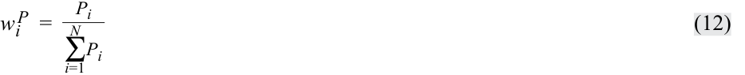
Exhibit 1 illustrates the values, weights, and single-period returns following inception of a price-weighted equity index with five constituent securities. The value of the price-weighted index is determined by dividing the sum of the security values (101.50) by the divisor, which is typically set at inception to equal the initial number of securities in the index. Thus, in our example, the divisor is 5 and the initial value of the index is calculated as 101.50 ÷ 5 = 20.30.
Bảng minh họa 1 (Exhibit 1) minh họa các giá trị, tỷ trọng, và tỷ suất sinh lợi đơn kỳ ngay sau khi thành lập của một chỉ số cổ phiếu tính tỷ trọng theo giá gồm năm chứng khoán thành phần. Giá trị của chỉ số tính tỷ trọng theo giá được xác định bằng cách chia tổng giá trị các chứng khoán (101,50) cho ước số (divisor), vốn thường được đặt tại thời điểm thành lập bằng với số lượng chứng khoán ban đầu trong chỉ số. Do đó, trong ví dụ của chúng ta, ước số là 5 và giá trị ban đầu của chỉ số được tính bằng $101,50 \div 5 = 20,30$.
As illustrated in this exhibit, Security A, which has the highest price, also has the highest weighting and thus will have the greatest impact on the return of the index. Note how both the price return and the total return of the index are calculated on the basis of the corresponding returns on the constituent securities.
Như được minh họa trong bảng này, Chứng khoán A, có mức giá cao nhất, cũng có tỷ trọng cao nhất và do đó sẽ có tác động lớn nhất đến tỷ suất sinh lợi của chỉ số. Lưu ý cách cả tỷ suất sinh lợi giá và tổng tỷ suất sinh lợi của chỉ số đều được tính dựa trên tỷ suất sinh lợi tương ứng của các chứng khoán thành phần.
Bảng minh họa 1: Chỉ số cổ phiếu tính tỷ trọng theo giá (Exhibit 1: A Price-Weighted Equity Index)
| EOP Weight (%) |
52.38 | 20.95 | 7.62 | 13.33 | 5.72 | 100.00 | ||||
|---|---|---|---|---|---|---|---|---|---|---|
| BOP Weight × Total Return (%) |
5.66 | −2.86 | −4.43 | 3.99 | 1.97 | 4.33 | ||||
| BOP Weight × Price Return (%) |
4.93 | −2.96 | −4.43 | 3.94 | 1.97 | 3.45 | ||||
| Total Return (%) |
11.50 | −11.60 | −36.00 | 40.50 | 50.00 | 4.33 | ||||
| Price Return (%) |
10.00 | −12.00 | −36.00 | 40.00 | 50.00 | 3.45 | ||||
| Total Dividends |
0.75 | 0.10 | 0.00 | 0.05 | 0.00 | 0.90 | 0.18 | |||
| Value (Shares × EOP Price) |
55.00 | 22.00 | 8.00 | 14.00 | 6.00 | 105.00 | 21.00 | |||
| Dividends Per Share |
0.75 | 0.10 | 0.00 | 0.05 | 0.00 | |||||
| EOP Price | 55.00 | 22.00 | 8.00 | 14.00 | 6.00 | |||||
| BOP Weight (%) |
49.26 | 24.63 | 12.32 | 9.85 | 3.94 | 100.00 | ||||
| Value (Shares × BOP Price) |
50.00 | 25.00 | 12.50 | 10.00 | 4.00 | 101.50 | 20.30 | EOP Value |
21.00 21.18 |
|
BOP Price |
50.00 | 25.00 | 12.50 | 10.00 | 4.00 | riod | Return (%) |
3.45 4.33 |
||
| Shares in Index |
1 | 1 | 1 | 1 | 1 | 5 ginning of pe d of period |
BOP Value |
20.30 20.30 |
||
| Security | A | B | C | D | E | Total | Index Value |
Divisor = BOP = Be EOP = En |
Type of Index |
Price Return Total Return |
| Tỷ trọng cuối kỳ (EOP Weight) (%) | 52,38 | 20,95 | 7,62 | 13,33 | 5,72 | 100,00 | ||||
|---|---|---|---|---|---|---|---|---|---|---|
| Tỷ trọng đầu kỳ (BOP Weight) × Tổng tỷ suất sinh lợi (Total Return) (%) | 5,66 | −2,86 | −4,43 | 3,99 | 1,97 | 4,33 | ||||
| Tỷ trọng đầu kỳ (BOP Weight) × Tỷ suất sinh lợi giá (Price Return) (%) | 4,93 | −2,96 | −4,43 | 3,94 | 1,97 | 3,45 | ||||
| Tổng tỷ suất sinh lợi (Total Return) (%) | 11,50 | −11,60 | −36,00 | 40,50 | 50,00 | 4,33 | ||||
| Tỷ suất sinh lợi giá (Price Return) (%) | 10,00 | −12,00 | −36,00 | 40,00 | 50,00 | 3,45 | ||||
| Tổng cổ tức (Total Dividends) | 0,75 | 0,10 | 0,00 | 0,05 | 0,00 | 0,90 | 0,18 | |||
| Giá trị (Số cổ phiếu × Giá EOP) | 55,00 | 22,00 | 8,00 | 14,00 | 6,00 | 105,00 | 21,00 | |||
| Cổ tức mỗi cổ phiếu (Dividends Per Share) | 0,75 | 0,10 | 0,00 | 0,05 | 0,00 | |||||
| Giá cuối kỳ (EOP Price) | 55,00 | 22,00 | 8,00 | 14,00 | 6,00 | |||||
| Tỷ trọng đầu kỳ (BOP Weight) (%) | 49,26 | 24,63 | 12,32 | 9,85 | 3,94 | 100,00 | ||||
| Giá trị (Số cổ phiếu × Giá BOP) | 50,00 | 25,00 | 12,50 | 10,00 | 4,00 | 101,50 | 20,30 | Giá trị cuối kỳ (EOP Value) | 21,00 21,18 |
|
| Giá đầu kỳ (BOP Price) | 50,00 | 25,00 | 12,50 | 10,00 | 4,00 | Tỷ suất sinh lợi (Return) (%) | 3,45 4,33 |
|||
| Số cổ phiếu trong chỉ số (Shares in Index) | 1 | 1 | 1 | 1 | 1 | Ước số (Divisor) = 5 BOP = Đầu kỳ (Beginning of period) EOP = Cuối kỳ (End of period) |
Giá trị đầu kỳ (BOP Value) | 20,30 20,30 |
||
| Chứng khoán (Security) | A | B | C | D | E | Tổng (Total) | Giá trị chỉ số (Index Value) | Ước số / Chú thích | Loại chỉ số (Type of Index) | Tỷ suất sinh lợi giá (Price Return) Tổng tỷ suất sinh lợi (Total Return) |
A property unique to price-weighted indexes is that a stock split on one constituent security changes the weights on all the securities in the index.1 To prevent the stock split and the resulting new weights from changing the value of the index, the index provider must adjust the value of the divisor as illustrated in Exhibit 2. Given a 2-for-1 split in Security A, the divisor is adjusted by dividing the sum of the constituent prices after the split (77.50) by the value of the index before the split (21.00). This adjustment results in changing the divisor from 5 to 3.69 so that the index value is maintained at 21.00.
Một đặc tính duy nhất chỉ có ở các chỉ số tính tỷ trọng theo giá là việc chia tách cổ phiếu (stock split) đối với một chứng khoán thành phần sẽ làm thay đổi tỷ trọng của tất cả các chứng khoán trong chỉ số.1 Để ngăn việc chia tách cổ phiếu và các tỷ trọng mới phát sinh làm thay đổi giá trị của chỉ số, nhà cung cấp chỉ số phải điều chỉnh giá trị của ước số như được minh họa trong Bảng minh họa 2. Với việc chia tách cổ phiếu tỷ lệ 2 đổi 1 (2-for-1 split) ở Chứng khoán A, ước số được điều chỉnh bằng cách lấy tổng giá của các chứng khoán thành phần sau khi chia tách (77,50) chia cho giá trị của chỉ số trước khi chia tách (21,00). Sự điều chỉnh này dẫn đến việc thay đổi ước số từ 5 xuống 3,69 sao cho giá trị chỉ số được duy trì ở mức 21,00.
The primary advantage of price weighting is its simplicity. The main disadvantage of price weighting is that it results in arbitrary weights for each security. In particular, a stock split in any one security causes arbitrary changes in the weights of all the constituents’ securities.
Ưu điểm chính của phương pháp tính tỷ trọng theo giá là tính đơn giản của nó. Nhược điểm chính của phương pháp tính tỷ trọng theo giá là nó dẫn đến các tỷ trọng tùy ý (arbitrary weights) cho mỗi chứng khoán. Đặc biệt, việc chia tách cổ phiếu ở bất kỳ một chứng khoán nào cũng gây ra những thay đổi tùy ý trong tỷ trọng của tất cả các chứng khoán thành phần.
Exhibit 2: Impact of 2-for-1 Split in Security A
Bảng minh họa 2: Tác động của việc Chia tách Cổ phiếu tỷ lệ 2 đổi 1 đối với Chứng khoán A (Exhibit 2: Impact of 2-for-1 Split in Security A)
| Security | Price before Split | Weight before Split (%) | Price after Split | Weight after Split (%) |
|---|---|---|---|---|
| A | 55.00 | 52.38 | 27.50 | 35.48 |
| B | 22.00 | 20.95 | 22.00 | 28.39 |
| C | 8.00 | 7.62 | 8.00 | 10.32 |
| D | 14.00 | 13.33 | 14.00 | 18.07 |
| E | 6.00 | 5.72 | 6.00 | 7.74 |
| Total | 105.00 | 100.00 | 77.50 | 100.00 |
| Divisor | 5.00 | 3.69 | ||
| Index Value | 21.00 | 21.00 |
| Chứng khoán (Security) | Giá trước khi chia tách (Price before Split) | Tỷ trọng trước khi chia tách (Weight before Split) (%) | Giá sau khi chia tách (Price after Split) | Tỷ trọng sau khi chia tách (Weight after Split) (%) |
|---|---|---|---|---|
| A | 55,00 | 52,38 | 27,50 | 35,48 |
| B | 22,00 | 20,95 | 22,00 | 28,39 |
| C | 8,00 | 7,62 | 8,00 | 10,32 |
| D | 14,00 | 13,33 | 14,00 | 18,07 |
| E | 6,00 | 5,72 | 6,00 | 7,74 |
| Tổng (Total) | 105,00 | 100,00 | 77,50 | 100,00 |
| Ước số (Divisor) | 5,00 | 3,69 | ||
| Giá trị Chỉ số (Index Value) | 21,00 | 21,00 |
Equal Weighting
Tính Tỷ trọng Đều (Equal Weighting)
Another simple index weighting method is equal weighting . This method assigns an equal weight to each constituent security at inception. The weights are calculated as:
Một phương pháp tính tỷ trọng chỉ số đơn giản khác là tính tỷ trọng đều (equal weighting). Phương pháp này gán một tỷ trọng bằng nhau cho mỗi chứng khoán thành phần tại thời điểm thành lập. Các tỷ trọng được tính như sau:
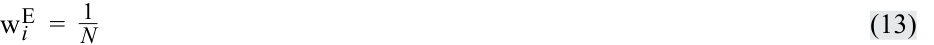
where
trong đó
w i = fraction of the portfolio that is allocated to security i or weight of security i
$w_i$ = tỷ phần của danh mục được phân bổ cho chứng khoán $i$ hay tỷ trọng của chứng khoán $i$
N = number of securities in the index
$N$ = số lượng chứng khoán trong chỉ số
To construct an equal-weighted index from the five securities in Exhibit 1, the index provider allocates one-fifth (20 percent) of the value of the index (at the beginning of the period) to each security. Dividing the value allocated to each security by each security’s individual share price determines the number of shares of each security to include in the index. Unlike a price-weighted index, where the weights are arbitrarily determined by the market prices, the weights in an equal-weighted index are arbitrarily assigned by the index provider.
Để xây dựng một chỉ số tính tỷ trọng đều từ năm chứng khoán trong Bảng minh họa 1, nhà cung cấp chỉ số phân bổ một phần năm (20 phần trăm) giá trị của chỉ số (vào đầu kỳ) cho mỗi chứng khoán. Chia giá trị được phân bổ cho mỗi chứng khoán cho giá cổ phiếu riêng lẻ của từng chứng khoán sẽ xác định được số lượng cổ phiếu của mỗi chứng khoán cần đưa vào chỉ số. Không giống như chỉ số tính tỷ trọng theo giá, nơi các tỷ trọng được xác định một cách tùy ý bởi giá thị trường, các tỷ trọng trong chỉ số tính tỷ trọng đều được gán một cách tùy ý bởi nhà cung cấp chỉ số.
1 A stock split is an increase in the number of shares outstanding and a proportionate decrease in the price per share such that the total market value of equity, as well as investors’ proportionate ownership in the company, does not change.
1 Chia tách cổ phiếu (stock split) là sự gia tăng số lượng cổ phiếu đang lưu hành và sự sụt giảm tương ứng trong giá mỗi cổ phiếu sao cho tổng giá trị thị trường của vốn chủ sở hữu, cũng như tỷ lệ sở hữu tương ứng của các nhà đầu tư trong công ty, không thay đổi.
Exhibit 3 illustrates the values, weights, and single-period returns following inception of an equal-weighted index with the same constituent securities as those in Exhibit 1. This example assumes a beginning index portfolio value of 10,000 (i.e., an investment of 2,000 in each security). To set the initial value of the index to 1,000, the divisor is set to 10 (10,000 ÷ 10 = 1,000).
Bảng minh họa 3 minh họa các giá trị, tỷ trọng, và tỷ suất sinh lợi đơn kỳ ngay sau khi thành lập của một chỉ số tính tỷ trọng đều với cùng các chứng khoán thành phần như trong Bảng minh họa 1. Ví dụ này giả định giá trị danh mục chỉ số đầu kỳ là 10.000 (tức là khoản đầu tư 2.000 vào mỗi chứng khoán). Để đặt giá trị ban đầu của chỉ số bằng 1.000, ước số được đặt bằng 10 ($10.000 \div 10 = 1.000$).
Exhibit 1 and Exhibit 3 demonstrate how different weighting methods result in different returns. The 10.4 percent price return of the equal-weighted index shown in Exhibit 3 differs significantly from the 3.45 percent price return of the price-weighted index in Exhibit 1.
Bảng minh họa 1 và Bảng minh họa 3 chứng minh cách các phương pháp tính tỷ trọng khác nhau dẫn đến các tỷ suất sinh lợi khác nhau. Tỷ suất sinh lợi giá 10,4 phần trăm của chỉ số tính tỷ trọng đều được hiển thị trong Bảng minh họa 3 khác biệt đáng kể so với tỷ suất sinh lợi giá 3,45 phần trăm của chỉ số tính tỷ trọng theo giá trong Bảng minh họa 1.
Like price weighting, the primary advantage of equal weighting is its simplicity. Equal weighting, however, has a number of disadvantages. First, securities that constitute the largest fraction of the target market value are underrepresented, and securities that constitute a small fraction of the target market value are overrepresented. Second, after the index is constructed and the prices of constituent securities change, the index is no longer equally weighted. Therefore, maintaining equal weights requires frequent adjustments (rebalancing) to the index.
Giống như tính tỷ trọng theo giá, ưu điểm chính của tính tỷ trọng đều là tính đơn giản của nó. Tuy nhiên, tính tỷ trọng đều có một số nhược điểm. Thứ nhất, các chứng khoán chiếm tỷ phần lớn nhất trong giá trị thị trường mục tiêu bị đại diện dưới mức (underrepresented), và các chứng khoán chiếm tỷ phần nhỏ trong giá trị thị trường mục tiêu lại bị đại diện vượt mức (overrepresented). Thứ hai, sau khi chỉ số được xây dựng và giá của các chứng khoán thành phần thay đổi, chỉ số đó không còn có tỷ trọng bằng nhau nữa. Do đó, việc duy trì tỷ trọng bằng nhau đòi hỏi phải điều chỉnh (tái cân bằng – rebalancing) chỉ số thường xuyên.
Market-Capitalization Weighting
Tính Tỷ trọng theo Vốn hóa Thị trường (Market-Capitalization Weighting)
In market-capitalization weighting , or value weighting, the weight on each constituent security is determined by dividing its market capitalization by the total market capitalization (the sum of the market capitalization) of all the securities in the index. Market capitalization or value is calculated by multiplying the number of shares outstanding by the market price per share.
Trong phương pháp tính tỷ trọng theo vốn hóa thị trường (market-capitalization weighting), hay tính tỷ trọng theo giá trị (value weighting), tỷ trọng của mỗi chứng khoán thành phần được xác định bằng cách chia vốn hóa thị trường của nó cho tổng vốn hóa thị trường (tổng cộng vốn hóa thị trường) của tất cả các chứng khoán trong chỉ số. Vốn hóa thị trường hay giá trị thị trường được tính bằng cách nhân số lượng cổ phiếu đang lưu hành với giá thị trường của mỗi cổ phiếu.
The market-capitalization weight of security i is:
Tỷ trọng vốn hóa thị trường của chứng khoán $i$ là:
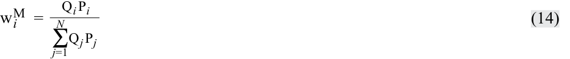
where
trong đó
-
w i = fraction of the portfolio that is allocated to security i or weight of security i
-
Q i = number of shares outstanding of security i
-
P i = share price of security i
-
N = number of securities in the index
-
$w_i$ = tỷ phần của danh mục được phân bổ cho chứng khoán $i$ hay tỷ trọng của chứng khoán $i$
-
$Q_i$ = số lượng cổ phiếu đang lưu hành của chứng khoán $i$
-
$P_i$ = giá cổ phiếu của chứng khoán $i$
-
$N$ = số lượng chứng khoán trong chỉ số
Exhibit 4 illustrates the values, weights, and single-period returns following inception of a market-capitalization-weighted index for the same five-security market. Security A, with 3,000 shares outstanding and a price of 50 per share, has a market capitalization of 150,000 or 26.29 percent (150,000/570,500) of the entire index portfolio. The resulting index weights in the exhibit reflect the relative value of each security as measured by its market capitalization.
Bảng minh họa 4 minh họa các giá trị, tỷ trọng, và tỷ suất sinh lợi đơn kỳ ngay sau khi thành lập của một chỉ số tính tỷ trọng theo vốn hóa thị trường cho cùng thị trường gồm năm chứng khoán đó. Chứng khoán A, với 3.000 cổ phiếu đang lưu hành và mức giá 50 mỗi cổ phiếu, có vốn hóa thị trường là 150.000 hay 26,29 phần trăm ($150.000 / 570.500$) của toàn bộ danh mục chỉ số. Các tỷ trọng chỉ số thu được trong bảng minh họa phản ánh giá trị tương đối của mỗi chứng khoán được đo lường bằng vốn hóa thị trường của nó.
As shown in Exhibit 1, Exhibit 3, and Exhibit 4, the weighting method affects the index’s returns. The price and total returns of the market-capitalization index in Exhibit 4 (1.49 percent and 2.13 percent, respectively) differ significantly from those of the price-weighted (3.45 percent and 4.33 percent, respectively) and equal-weighted (10.40 percent and 10.88 percent respectively) indexes. To understand the source and magnitude of the difference, compare the weights and returns of each security under each of the weighting methods. The weight of Security A, for example, ranges from 49.26 percent in the price-weighted index to 20 percent in the equal-weighted index. With a price return of 10 percent, Security A contributes 4.93 percent to the price return of the price-weighted index, 2.00 percent to the price return of the equal-weighted index, and 2.63 percent to the price return of the market-capitalization-weighted index. With
Như được thể hiện trong Bảng minh họa 1, Bảng minh họa 3 và Bảng minh họa 4, phương pháp tính tỷ trọng ảnh hưởng đến tỷ suất sinh lợi của chỉ số. Tỷ suất sinh lợi giá và tổng tỷ suất sinh lợi của chỉ số vốn hóa thị trường trong Bảng minh họa 4 (lần lượt là 1,49 phần trăm và 2,13 phần trăm) khác biệt đáng kể so với chỉ số tính tỷ trọng theo giá (lần lượt là 3,45 phần trăm và 4,33 phần trăm) và chỉ số tính tỷ trọng đều (lần lượt là 10,40 phần trăm và 10,88 phần trăm). Để hiểu nguyên nhân và mức độ của sự khác biệt này, hãy so sánh tỷ trọng và tỷ suất sinh lợi của từng chứng khoán dưới mỗi phương pháp tính tỷ trọng. Ví dụ, tỷ trọng của Chứng khoán A dao động từ 49,26 phần trăm trong chỉ số tính tỷ trọng theo giá đến 20 phần trăm trong chỉ số tính tỷ trọng đều. Với tỷ suất sinh lợi giá là 10 phần trăm, Chứng khoán A đóng góp 4,93 phần trăm vào tỷ suất sinh lợi giá của chỉ số tính tỷ trọng theo giá, 2,00 phần trăm vào tỷ suất sinh lợi giá của chỉ số tính tỷ trọng đều, và 2,63 phần trăm vào tỷ suất sinh lợi giá của chỉ số tính tỷ trọng theo vốn hóa thị trường. Với
Bảng minh họa 3: Chỉ số cổ phiếu tính tỷ trọng đều (Exhibit 3: An Equal-Weighted Equity Index)
| EOP Weight (%) |
19.93 | 15.94 | 11.60 | 25.36 | 27.17 | 100.00 | ||||
|---|---|---|---|---|---|---|---|---|---|---|
| Weight × Total Return (%) |
2.30 | −2.32 | −7.20 | 8.10 | 10.00 | 10.88 | ||||
| Weight × Price Return (%) |
2.00 | −2.40 | −7.20 | 8.00 | 10.00 | 10.40 | ||||
| Total Return (%) |
11.50 | −11.60 | −36.00 | 40.50 | 50.00 | 10.88 | ||||
| Price Return (%) |
10.00 | −12.00 | −36.00 | 40.00 | 50.00 | 10.40 | ||||
| Total Dividends |
30 | 8 | 0 | 10 | 0 | 48 | 4.80 | |||
| Value (Shares × EOP Price) |
2,200 | 1,760 | 1,280 | 2,800 | 3,000 | 11,040 | 1,104 | |||
| Dividends Per Share |
0.75 | 0.10 | 0.00 | 0.05 | 0.00 | |||||
| EOP Price |
55.00 | 22.00 | 8.00 | 14.00 | 6.00 | |||||
| Weight (%) | 20.00 | 20.00 | 20.00 | 20.00 | 20.00 | 100.00 | ||||
| Value (Shares × BOP Price) |
2,000 | 2,000 | 2,000 | 2,000 | 2,000 | 10,000 | 1,000 | EOP Value | 1,104.00 1,108.80 |
|
| BOP Price |
50.00 | 25.00 | 12.50 | 10.00 | 4.00 | od | Return (%) |
10.40 10.88 |
||
| Shares in Index |
40 | 80 | 160 | 200 | 500 | 10 ginning of peri d of period |
BOP Value | 1,000.00 1,000.00 |
||
| Security | A | B | C | D | E | Total | Index Value |
Divisor = BOP = Be EOP = En |
Type of Index |
Price Return Total Return |
| Tỷ trọng cuối kỳ (EOP Weight) (%) | 19,93 | 15,94 | 11,60 | 25,36 | 27,17 | 100,00 | ||||
|---|---|---|---|---|---|---|---|---|---|---|
| Tỷ trọng × Tổng tỷ suất sinh lợi (Weight × Total Return) (%) | 2,30 | −2,32 | −7,20 | 8,10 | 10,00 | 10,88 | ||||
| Tỷ trọng × Tỷ suất sinh lợi giá (Weight × Price Return) (%) | 2,00 | −2,40 | −7,20 | 8,00 | 10,00 | 10,40 | ||||
| Tổng tỷ suất sinh lợi (Total Return) (%) | 11,50 | −11,60 | −36,00 | 40,50 | 50,00 | 10,88 | ||||
| Tỷ suất sinh lợi giá (Price Return) (%) | 10,00 | −12,00 | −36,00 | 40,00 | 50,00 | 10,40 | ||||
| Tổng cổ tức (Total Dividends) | 30 | 8 | 0 | 10 | 0 | 48 | 4,80 | |||
| Giá trị (Số cổ phiếu × Giá EOP) | 2.200 | 1.760 | 1.280 | 2.800 | 3.000 | 11.040 | 1.104 | |||
| Cổ tức mỗi cổ phiếu (Dividends Per Share) | 0,75 | 0,10 | 0,00 | 0,05 | 0,00 | |||||
| Giá cuối kỳ (EOP Price) | 55,00 | 22,00 | 8,00 | 14,00 | 6,00 | |||||
| Tỷ trọng (Weight) (%) | 20,00 | 20,00 | 20,00 | 20,00 | 20,00 | 100,00 | ||||
| Giá trị (Số cổ phiếu × Giá BOP) | 2.000 | 2.000 | 2.000 | 2.000 | 2.000 | 10.000 | 1.000 | Giá trị cuối kỳ (EOP Value) | 1.104,00 1.108,80 |
|
| Giá đầu kỳ (BOP Price) | 50,00 | 25,00 | 12,50 | 10,00 | 4,00 | Tỷ suất sinh lợi (Return) (%) | 10,40 10,88 |
|||
| Số cổ phiếu trong chỉ số (Shares in Index) | 40 | 80 | 160 | 200 | 500 | Ước số (Divisor) = 10 BOP = Đầu kỳ (Beginning of period) EOP = Cuối kỳ (End of period) |
Giá trị đầu kỳ (BOP Value) | 1.000,00 1.000,00 |
||
| Chứng khoán (Security) | A | B | C | D | E | Tổng (Total) | Giá trị chỉ số (Index Value) | Ước số / Chú thích | Loại chỉ số (Type of Index) | Tỷ suất sinh lợi giá (Price Return) Tổng tỷ suất sinh lợi (Total Return) |
Bảng minh họa 4: Chỉ số cổ phiếu tính tỷ trọng theo vốn hóa thị trường (Exhibit 4: A Market-Capitalization-Weighted Equity Index)
| EOP Weight (%) |
28.50 | 38.00 | 6.91 | 19.34 | 7.25 | 100.00 | ||||
|---|---|---|---|---|---|---|---|---|---|---|
| BOP Weight × Total Return (%) |
3.02 | −5.08 | −3.95 | 5.68 | 2.46 | 2.13 | ||||
| BOP Weight × Price Return (%) |
2.63 | −5.26 | −3.95 | 5.61 | 2.46 | 1.49 | ||||
| Total Return (%) |
11.50 | −11.60 | −36.00 | 40.50 | 50.00 | 2.13 | ||||
| Price Return (%) |
10.00 | −12.00 | −36.00 | 40.00 | 50.00 | 1.49 | ||||
| Total Dividends |
2,250 | 1,000 | 0 | 400 | 0 | 3,650 | 6.40 | |||
EOP Mar- ket Cap |
165,000 | 220,000 | 40,000 | 112,000 | 42,000 | 579,000 | 1,014.90 | |||
| Dividends Per Share |
0.75 | 0.10 | 0.00 | 0.05 | 0.00 | |||||
| EOP Price |
55.00 | 22.00 | 8.00 | 14.00 | 6.00 | |||||
| BOP Weight (%) |
26.29 | 43.82 | 10.96 | 14.02 | 4.91 | 100.00 | ||||
| BOP Mar- ket Cap |
150,000 | 250,000 | 62,500 | 80,000 | 28,000 | 570,500 | 1,000 | EOP Value |
1,014.90 1,021.30 |
|
| BOP Price |
50.00 | 25.00 | 12.50 | 10.00 | 4.00 | eriod | Return (%) |
1.49 2.13 |
||
| Shares Out-standing |
3,000 | 10,000 | 5,000 | 8,000 | 7,000 | = 570.50 eginning of p nd of period |
BOP Value |
1,000.00 1,000.00 |
||
| Stock |
A | B | C | D | E | Total | Index Value |
Divisor BOP = B EOP = E |
Type of Index |
Price Return Total Return |
| Tỷ trọng cuối kỳ (EOP Weight) (%) | 28,50 | 38,00 | 6,91 | 19,34 | 7,25 | 100,00 | ||||
|---|---|---|---|---|---|---|---|---|---|---|
| Tỷ trọng đầu kỳ (BOP Weight) × Tổng tỷ suất sinh lợi (Total Return) (%) | 3,02 | −5,08 | −3,95 | 5,68 | 2,46 | 2,13 | ||||
| Tỷ trọng đầu kỳ (BOP Weight) × Tỷ suất sinh lợi giá (Price Return) (%) | 2,63 | −5,26 | −3,95 | 5,61 | 2,46 | 1,49 | ||||
| Tổng tỷ suất sinh lợi (Total Return) (%) | 11,50 | −11,60 | −36,00 | 40,50 | 50,00 | 2,13 | ||||
| Tỷ suất sinh lợi giá (Price Return) (%) | 10,00 | −12,00 | −36,00 | 40,00 | 50,00 | 1,49 | ||||
| Tổng cổ tức (Total Dividends) | 2.250 | 1.000 | 0 | 400 | 0 | 3.650 | 6,40 | |||
| Vốn hóa thị trường cuối kỳ (EOP Market Cap) | 165.000 | 220.000 | 40.000 | 112.000 | 42.000 | 579.000 | 1.014,90 | |||
| Cổ tức mỗi cổ phiếu (Dividends Per Share) | 0,75 | 0,10 | 0,00 | 0,05 | 0,00 | |||||
| Giá cuối kỳ (EOP Price) | 55,00 | 22,00 | 8,00 | 14,00 | 6,00 | |||||
| Tỷ trọng đầu kỳ (BOP Weight) (%) | 26,29 | 43,82 | 10,96 | 14,02 | 4,91 | 100,00 | ||||
| Vốn hóa thị trường đầu kỳ (BOP Market Cap) | 150.000 | 250.000 | 62.500 | 80.000 | 28.000 | 570.500 | 1.000 | Giá trị cuối kỳ (EOP Value) | 1.014,90 1.021,30 |
|
| Giá đầu kỳ (BOP Price) | 50,00 | 25,00 | 12,50 | 10,00 | 4,00 | Tỷ suất sinh lợi (Return) (%) | 1,49 2,13 |
|||
| Số cổ phiếu đang lưu hành (Shares Outstanding) | 3.000 | 10.000 | 5.000 | 8.000 | 7.000 | Ước số (Divisor) = 570,50 BOP = Đầu kỳ (Beginning of period) EOP = Cuối kỳ (End of period) |
Giá trị đầu kỳ (BOP Value) | 1.000,00 1.000,00 |
||
| Cổ phiếu (Stock) | A | B | C | D | E | Tổng (Total) | Giá trị chỉ số (Index Value) | Ước số / Chú thích | Loại chỉ số (Type of Index) | Tỷ suất sinh lợi giá (Price Return) Tổng tỷ suất sinh lợi (Total Return) |
a total return of 11.50 percent, Security A contributes 5.66 percent to the total return of the price-weighted index, 2.30 percent to the total return of the equal-weighted index, and 3.02 percent to the total return of the market-capitalization-weighted index.
tổng tỷ suất sinh lợi là 11,50 phần trăm, Chứng khoán A đóng góp 5,66 phần trăm vào tổng tỷ suất sinh lợi của chỉ số tính tỷ trọng theo giá, 2,30 phần trăm vào tổng tỷ suất sinh lợi của chỉ số tính tỷ trọng đều, và 3,02 phần trăm vào tổng tỷ suất sinh lợi của chỉ số tính tỷ trọng theo vốn hóa thị trường.
Float-Adjusted Market-Capitalization Weighting
Tính Tỷ trọng theo Vốn hóa Thị trường Điều chỉnh theo Tỷ lệ Tự do Chuyển nhượng (Float-Adjusted Market-Capitalization Weighting)
In float-adjusted market-capitalization weighting , the weight on each constituent security is determined by adjusting its market capitalization for its market float . Typically, market float is the number of shares of the constituent security that are available to the investing public. For companies that are closely held, only a portion of the shares outstanding are available to the investing public (the rest are held by a small group of controlling investors). In addition to excluding shares held by controlling shareholders, most float-adjusted market-capitalization-weighted indexes also exclude shares held by other corporations and governments. Some providers of indexes that are designed to represent the investment opportunities of global investors further reduce the number of shares included in the index by excluding shares that are not available to foreigner investors. The index providers may refer to these indexes as “free-float-adjusted market-capitalization-weighted indexes.”
Trong phương pháp tính tỷ trọng theo vốn hóa thị trường điều chỉnh theo tỷ lệ tự do chuyển nhượng (float-adjusted market-capitalization weighting), tỷ trọng của mỗi chứng khoán thành phần được xác định bằng cách điều chỉnh vốn hóa thị trường của nó theo lượng cổ phiếu tự do chuyển nhượng trên thị trường (market float) của nó. Thông thường, lượng cổ phiếu tự do chuyển nhượng trên thị trường (market float) là số lượng cổ phiếu của chứng khoán thành phần hiện có sẵn cho công chúng đầu tư. Đối với các công ty có cơ cấu sở hữu cô đặc (closely held), chỉ một phần số cổ phiếu đang lưu hành là có sẵn cho công chúng đầu tư (phần còn lại do một nhóm nhỏ các nhà đầu tư kiểm soát nắm giữ). Ngoài việc loại trừ các cổ phiếu do cổ đông kiểm soát nắm giữ, hầu hết các chỉ số tính tỷ trọng theo vốn hóa thị trường điều chỉnh theo tỷ lệ tự do chuyển nhượng còn loại trừ các cổ phiếu do các tập đoàn khác và chính phủ nắm giữ. Một số nhà cung cấp các chỉ số được thiết kế để đại diện cho cơ hội đầu tư của các nhà đầu tư toàn cầu còn giảm thêm số lượng cổ phiếu được đưa vào chỉ số bằng cách loại trừ các cổ phiếu không có sẵn cho các nhà đầu tư nước ngoài. Các nhà cung cấp chỉ số có thể gọi các chỉ số này là “chỉ số tính tỷ trọng theo vốn hóa thị trường điều chỉnh theo tỷ lệ tự do chuyển nhượng hoàn toàn (free-float-adjusted market-capitalization-weighted indexes)”.
Float-adjusted market-capitalization-weighted indexes reflect the shares available for public trading by multiplying the market price per share by the number of shares available to the investing public (i.e., the float-adjusted market capitalization) rather than the total number of shares outstanding (total market capitalization). Currently, most market-capitalization-weighted indexes are float adjusted. Therefore, unless otherwise indicated, for the remainder of this reading, “market-capitalization” weighting refers to float-adjusted market-capitalization weighting.
Các chỉ số tính tỷ trọng theo vốn hóa thị trường điều chỉnh theo tỷ lệ tự do chuyển nhượng phản ánh số cổ phiếu có sẵn để giao dịch công khai bằng cách nhân giá thị trường mỗi cổ phiếu với số lượng cổ phiếu có sẵn cho công chúng đầu tư (tức là vốn hóa thị trường điều chỉnh theo tỷ lệ tự do chuyển nhượng) thay vì tổng số cổ phiếu đang lưu hành (tổng vốn hóa thị trường). Hiện nay, hầu hết các chỉ số tính tỷ trọng theo vốn hóa thị trường đều được điều chỉnh theo tỷ lệ tự do chuyển nhượng. Do đó, trừ khi có chỉ dẫn khác, trong phần còn lại của bài đọc này, tính tỷ trọng “theo vốn hóa thị trường” đề cập đến tính tỷ trọng theo vốn hóa thị trường điều chỉnh theo tỷ lệ tự do chuyển nhượng.
The float-adjusted market-capitalization weight of security i is calculated as:
Tỷ trọng vốn hóa thị trường điều chỉnh theo tỷ lệ tự do chuyển nhượng của chứng khoán $i$ được tính như sau:
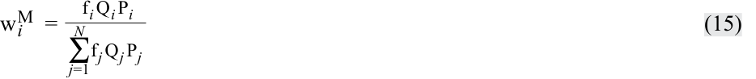
where
trong đó
f i = fraction of shares outstanding in the market float
$f_i$ = tỷ phần số cổ phiếu đang lưu hành nằm trong lượng cổ phiếu tự do chuyển nhượng trên thị trường (market float)
-
w i = fraction of the portfolio that is allocated to security i or weight of security i
-
Q i = number of shares outstanding of security i
-
P i = share price of security i
-
N = number of securities in the index
-
$w_i$ = tỷ phần của danh mục được phân bổ cho chứng khoán $i$ hay tỷ trọng của chứng khoán $i$
-
$Q_i$ = số lượng cổ phiếu đang lưu hành của chứng khoán $i$
-
$P_i$ = giá cổ phiếu của chứng khoán $i$
-
$N$ = số lượng chứng khoán trong chỉ số
Exhibit 5 illustrates the values, weights, and single-period returns following inception of a float-adjusted market-capitalization-weighted equity index using the same five securities as before. The low percentage of shares of Security D in the market float compared with the number of shares outstanding indicates that the security is closely held.
Bảng minh họa 5 minh họa các giá trị, tỷ trọng, và tỷ suất sinh lợi đơn kỳ ngay sau khi thành lập của một chỉ số cổ phiếu tính tỷ trọng theo vốn hóa thị trường điều chỉnh theo tỷ lệ tự do chuyển nhượng sử dụng cùng năm chứng khoán như trước. Tỷ lệ phần trăm cổ phiếu thấp của Chứng khoán D trong lượng cổ phiếu tự do chuyển nhượng trên thị trường so với tổng số cổ phiếu đang lưu hành cho thấy chứng khoán này có cơ cấu sở hữu cô đặc.
The primary advantage of market-capitalization weighting (including float adjusted) is that constituent securities are held in proportion to their value in the target market. The primary disadvantage is that constituent securities whose prices have risen the most (or fallen the most) have a greater (or lower) weight in the index (i.e., as a security’s price rises relative to other securities in the index, its weight increases; and as its price decreases in value relative to other securities in the index, its weight decreases). This weighting method leads to overweighting stocks that have risen in price (and may be overvalued) and underweighting stocks that have declined in price (and may be undervalued). The effect of this weighting method is similar to a momentum investment strategy in that over time, the securities that have risen in price the most will have the largest weights in the index.
Ưu điểm chính của phương pháp tính tỷ trọng theo vốn hóa thị trường (bao gồm cả điều chỉnh theo tỷ lệ tự do chuyển nhượng) là các chứng khoán thành phần được nắm giữ theo tỷ lệ tương ứng với giá trị của chúng trên thị trường mục tiêu. Nhược điểm chính là các chứng khoán thành phần có giá tăng nhiều nhất (hoặc giảm nhiều nhất) sẽ có tỷ trọng lớn hơn (hoặc thấp hơn) trong chỉ số (tức là khi giá của một chứng khoán tăng tương đối so với các chứng khoán khác trong chỉ số, tỷ trọng của nó tăng lên; và khi giá của nó giảm giá trị tương đối so với các chứng khoán khác trong chỉ số, tỷ trọng của nó giảm xuống). Phương pháp tính tỷ trọng này dẫn đến việc phân bổ tỷ trọng vượt mức (overweighting) cho các cổ phiếu đã tăng giá (và có thể bị định giá quá cao) và phân bổ tỷ trọng dưới mức (underweighting) cho các cổ phiếu đã giảm giá (và có thể bị định giá quá thấp). Tác động của phương pháp tính tỷ trọng này tương tự như một chiến lược đầu tư theo đà tăng trưởng (momentum investment strategy) ở chỗ theo thời gian, các chứng khoán đã tăng giá nhiều nhất sẽ có tỷ trọng lớn nhất trong chỉ số.
Bảng minh họa 5: Chỉ số cổ phiếu tính tỷ trọng theo vốn hóa thị trường điều chỉnh theo tỷ lệ tự do chuyển nhượng (Exhibit 5: A Float-Adjusted Market-Capitalization-Weighted Equity Index)
| EOP Weight (%) |
39.61 | 36.97 | 8.64 | 6.72 | 8.06 | 100.00 | ||||
|---|---|---|---|---|---|---|---|---|---|---|
| BOP Weight × Total Return (%) |
4.07 | −4.79 | −4.78 | 1.91 | 2.65 | −0.94 | ||||
| BOP Weight × Price Return (%) |
3.54 | −4.96 | −4.78 | 1.89 | 2.65 | −1.66 | ||||
| Total Return (%) |
11.50 | −11.60 | −36.00 | 40.50 | 50.00 | −0.94 | ||||
| Price Return (%) |
10.00 | −12.00 | −36.00 | 40.00 | 50.00 | −1.66 | ||||
| Total Dividends |
2,250 | 700 | 0 | 100 | 0 | 3,050 | 7.20 | |||
| Ending Float- Adjusted Market Cap |
165,000 | 154,000 | 36,000 | 28,000 | 33,600 | 416,600 | 983.36 | |||
| Divi- dends Per Share |
0.75 | 0.10 | 0.00 | 0.05 | 0.00 | |||||
| EOP Price |
55.00 | 22.00 | 8.00 | 14.00 | 6.00 | |||||
| BOP Weight (%) |
35.40 | 41.31 | 13.28 | 4.72 | 5.29 | 100.00 | ||||
| BOP Float- Adjusted Market Cap |
150,000 | 175,000 | 56,250 | 20,000 | 22,400 | 423,650 | 1,000 | |||
| BOP Price |
50.00 | 25.00 | 12.50 | 10.00 | 4.00 | |||||
| Shares in Index |
3,000 | 7,000 | 4,500 | 2,000 | 5,600 | Ending Value |
983.36 990.56 |
|||
| g % Shares in Market Float |
100 | 70 | 90 | 25 | 80 | period | Return (%) |
−1.66 −0.94 |
||
| Shares Out-standin |
3,000 | 10,000 | 5,000 | 8,000 | 7,000 | = 423.65 eginning of nd of period |
Initial Value |
1,000.00 1,000.00 |
||
| Stock | A | B | C | D | E | Total | Index Value |
Divisor BOP = B EOP = E |
Type of Index |
Price Return Total Return |
| Tỷ trọng cuối kỳ (EOP Weight) (%) | 39,61 | 36,97 | 8,64 | 6,72 | 8,06 | 100,00 | ||||
|---|---|---|---|---|---|---|---|---|---|---|
| Tỷ trọng đầu kỳ (BOP Weight) × Tổng tỷ suất sinh lợi (Total Return) (%) | 4,07 | −4,79 | −4,78 | 1,91 | 2,65 | −0,94 | ||||
| Tỷ trọng đầu kỳ (BOP Weight) × Tỷ suất sinh lợi giá (Price Return) (%) | 3,54 | −4,96 | −4,78 | 1,89 | 2,65 | −1,66 | ||||
| Tổng tỷ suất sinh lợi (Total Return) (%) | 11,50 | −11,60 | −36,00 | 40,50 | 50,00 | −0,94 | ||||
| Tỷ suất sinh lợi giá (Price Return) (%) | 10,00 | −12,00 | −36,00 | 40,00 | 50,00 | −1,66 | ||||
| Tổng cổ tức (Total Dividends) | 2.250 | 700 | 0 | 100 | 0 | 3.050 | 7,20 | |||
| Vốn hóa thị trường điều chỉnh theo float cuối kỳ (Ending Float-Adjusted Market Cap) | 165.000 | 154.000 | 36.000 | 28.000 | 33.600 | 416.600 | 983,36 | |||
| Cổ tức mỗi cổ phiếu (Dividends Per Share) | 0,75 | 0,10 | 0,00 | 0,05 | 0,00 | |||||
| Giá cuối kỳ (EOP Price) | 55,00 | 22,00 | 8,00 | 14,00 | 6,00 | |||||
| Tỷ trọng đầu kỳ (BOP Weight) (%) | 35,40 | 41,31 | 13,28 | 4,72 | 5,29 | 100,00 | ||||
| Vốn hóa thị trường điều chỉnh theo float đầu kỳ (BOP Float-Adjusted Market Cap) | 150.000 | 175.000 | 56.250 | 20.000 | 22.400 | 423.650 | 1.000 | |||
| Giá đầu kỳ (BOP Price) | 50,00 | 25,00 | 12,50 | 10,00 | 4,00 | |||||
| Số cổ phiếu trong chỉ số (Shares in Index) | 3.000 | 7.000 | 4.500 | 2.000 | 5.600 | Giá trị cuối kỳ (Ending Value) | 983,36 990,56 |
|||
| % Cổ phiếu tự do chuyển nhượng (% Shares in Market Float) | 100 | 70 | 90 | 25 | 80 | Tỷ suất sinh lợi (Return) (%) | −1,66 −0,94 |
|||
| Số cổ phiếu đang lưu hành (Shares Outstanding) | 3.000 | 10.000 | 5.000 | 8.000 | 7.000 | Ước số (Divisor) = 423,65 BOP = Đầu kỳ (Beginning of period) EOP = Cuối kỳ (End of period) |
Giá trị ban đầu (Initial Value) | 1.000,00 1.000,00 |
||
| Cổ phiếu (Stock) | A | B | C | D | E | Tổng (Total) | Giá trị chỉ số (Index Value) | Ước số / Chú thích | Loại chỉ số (Type of Index) | Tỷ suất sinh lợi giá (Price Return) Tổng tỷ suất sinh lợi (Total Return) |
Fundamental Weighting
Tính Tỷ trọng theo Yếu tố Cơ bản (Fundamental Weighting)
Fundamental weighting attempts to address the disadvantages of market-capitalization weighting by using measures of a company’s size that are independent of its security price to determine the weight on each constituent security. These measures include book value, cash flow, revenues, earnings, dividends, and number of employees.
Tính tỷ trọng theo yếu tố cơ bản (Fundamental weighting) cố gắng khắc phục những nhược điểm của việc tính tỷ trọng theo vốn hóa thị trường bằng cách sử dụng các thước đo quy mô của một công ty vốn độc lập với giá chứng khoán của nó để xác định tỷ trọng cho mỗi chứng khoán thành phần. Các thước đo này bao gồm giá trị sổ sách (book value), dòng tiền (cash flow), doanh thu (revenues), lợi nhuận (earnings), cổ tức (dividends), và số lượng nhân viên.
Some fundamental indexes use a single measure, such as total dividends, to weight the constituent securities, whereas others combine the weights from several measures to form a composite value that is used for weighting.
Một số chỉ số cơ bản sử dụng một thước đo duy nhất, chẳng hạn như tổng cổ tức, để tính tỷ trọng cho các chứng khoán thành phần, trong khi các chỉ số khác kết hợp tỷ trọng từ một số thước đo để tạo thành một giá trị tổng hợp (composite value) được dùng để tính tỷ trọng.
Letting F i denote a given fundamental size measure of company i , the fundamental weight on security i is:
Gọi $F_i$ là một thước đo quy mô cơ bản nhất định của công ty $i$, tỷ trọng cơ bản của chứng khoán $i$ là:
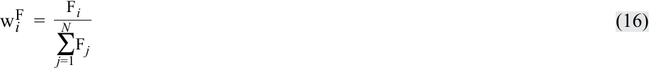
Relative to a market-capitalization-weighted index, a fundamental index with weights based on such an item as earnings will result in greater weights on constituent securities with earnings yields (earnings divided by price) that are higher than the earnings yield of the overall market-weighted portfolio. Similarly, stocks with earnings yields less than the yield on the overall market-weighted portfolio will have lower weights. For example, suppose there are two stocks in an index. Stock A has a market capitalization of €200 million, Stock B has a market capitalization of €800 million, and their aggregate market capitalization is €1 billion (€1,000 million). Both companies have earnings of €20 million and aggregate earnings of €40 million. Thus, Stock A has an earnings yield of 10 percent (20/200) and Stock B has an earnings yield of 2.5 percent (20/800). The earnings weight of Stock A is 50 percent (20/40), which is higher than its market-capitalization weight of 20 percent (200/1,000). The earnings weight of Stock B is 50 percent (20/40), which is less than its market-capitalization weight of 80 percent (800/1,000). Relative to the market-cap-weighted index, the earnings-weighted index over-weights the high-yield Stock A and under-weights the low-yield Stock B.
So với một chỉ số tính tỷ trọng theo vốn hóa thị trường, một chỉ số cơ bản với các tỷ trọng dựa trên một khoản mục như lợi nhuận sẽ dẫn đến tỷ trọng lớn hơn ở các chứng khoán thành phần có lợi suất thu nhập (earnings yields – lợi nhuận chia cho giá) cao hơn lợi suất thu nhập của toàn bộ danh mục tính tỷ trọng theo thị trường. Tương tự, các cổ phiếu có lợi suất thu nhập thấp hơn lợi suất của toàn bộ danh mục tính tỷ trọng theo thị trường sẽ có tỷ trọng thấp hơn. Ví dụ, giả sử có hai cổ phiếu trong một chỉ số. Cổ phiếu A có vốn hóa thị trường là €200 triệu, Cổ phiếu B có vốn hóa thị trường là €800 triệu, và tổng vốn hóa thị trường của chúng là €1 tỷ (€1.000 triệu). Cả hai công ty đều có lợi nhuận là €20 triệu và tổng lợi nhuận gộp là €40 triệu. Do đó, Cổ phiếu A có lợi suất thu nhập là 10 phần trăm ($20/200$) và Cổ phiếu B có lợi suất thu nhập là 2,5 phần trăm ($20/800$). Tỷ trọng tính theo lợi nhuận của Cổ phiếu A là 50 phần trăm ($20/40$), cao hơn tỷ trọng vốn hóa thị trường của nó là 20 phần trăm ($200/1.000$). Tỷ trọng tính theo lợi nhuận của Cổ phiếu B là 50 phần trăm ($20/40$), thấp hơn tỷ trọng vốn hóa thị trường của nó là 80 phần trăm ($800/1.000$). So với chỉ số tính tỷ trọng theo vốn hóa thị trường, chỉ số tính tỷ trọng theo lợi nhuận phân bổ tỷ trọng vượt mức cho Cổ phiếu A có lợi suất cao và phân bổ tỷ trọng dưới mức cho Cổ phiếu B có lợi suất thấp.
The most important property of fundamental weighting is that it leads to indexes that have a “value” tilt. That is, a fundamentally weighted index has ratios of book value, earnings, dividends, etc. to market value that are higher than its market-capitalization-weighted counterpart. Also, in contrast to the momentum “effect” of market-capitalization-weighted indexes, fundamentally weighted indexes generally will have a contrarian “effect” in that the portfolio weights will shift away from securities that have increased in relative value and toward securities that have fallen in relative value whenever the portfolio is rebalanced.
Đặc tính quan trọng nhất của việc tính tỷ trọng theo yếu tố cơ bản là nó dẫn đến các chỉ số có sự thiên lệch về “giá trị” (“value” tilt). Nghĩa là, một chỉ số được tính tỷ trọng theo yếu tố cơ bản có các tỷ số giữa giá trị sổ sách, lợi nhuận, cổ tức, v.v. trên giá trị thị trường cao hơn so với chỉ số tính tỷ trọng theo vốn hóa thị trường tương ứng của nó. Ngoài ra, trái ngược với “hiệu ứng” đà tăng trưởng (momentum “effect”) của các chỉ số tính tỷ trọng theo vốn hóa thị trường, các chỉ số tính tỷ trọng theo yếu tố cơ bản nhìn chung sẽ có “hiệu ứng” đi ngược xu hướng (contrarian “effect”) ở chỗ tỷ trọng danh mục sẽ dịch chuyển rời khỏi các chứng khoán đã tăng giá trị tương đối và hướng về các chứng khoán đã giảm giá trị tương đối mỗi khi danh mục được tái cân bằng.
INDEX MANAGEMENT: REBALANCING AND RECONSTITUTION
QUẢN LÝ CHỈ SỐ: TÁI CÂN BẰNG VÀ TÁI CẤU TRÚC (INDEX MANAGEMENT: REBALANCING AND RECONSTITUTION)
Chú thích hình ảnh: Mục 4
describe rebalancing and reconstitution of an index
mô tả việc tái cân bằng (rebalancing) và tái cấu trúc (reconstitution) của một chỉ số
So far, we have discussed index construction. Index management entails the two remaining questions:
Cho đến nay, chúng ta đã thảo luận về việc xây dựng chỉ số. Quản lý chỉ số bao gồm hai câu hỏi còn lại:
-
When should the index be rebalanced?
-
When should the security selection and weighting decisions be re-examined?
-
Khi nào chỉ số nên được tái cân bằng?
-
Khi nào các quyết định lựa chọn chứng khoán và phân bổ tỷ trọng nên được xem xét lại?
Rebalancing
Tái cân bằng (Rebalancing)
Rebalancing refers to adjusting the weights of the constituent securities in the index. To maintain the weight of each security consistent with the index’s weighting method, the index provider rebalances the index by adjusting the weights of the constituent securities on a regularly scheduled basis (rebalancing dates)—usually quarterly. Rebalancing is necessary because the weights of the constituent securities change as their market prices change. Note, for example, that the weights of the securities in the equal-weighted index (Exhibit 3) at the end of the period are no longer equal (i.e., 20 percent):
Tái cân bằng (Rebalancing) đề cập đến việc điều chỉnh tỷ trọng của các chứng khoán thành phần trong chỉ số. Để duy trì tỷ trọng của mỗi chứng khoán nhất quán với phương pháp tính tỷ trọng của chỉ số, nhà cung cấp chỉ số tái cân bằng chỉ số bằng cách điều chỉnh tỷ trọng của các chứng khoán thành phần theo lịch trình định kỳ đều đặn (các ngày tái cân bằng)—thường là hàng quý. Việc tái cân bằng là cần thiết vì tỷ trọng của các chứng khoán thành phần thay đổi khi giá thị trường của chúng thay đổi. Chẳng hạn, hãy lưu ý rằng tỷ trọng của các chứng khoán trong chỉ số tính tỷ trọng đều (Bảng minh họa 3) vào cuối kỳ không còn bằng nhau nữa (tức là không còn ở mức 20 phần trăm):
| Security A | 19.93% |
|---|---|
| Security B | 15.94 |
| Security C | 11.60 |
| Security D | 25.36 |
| Security E | 27.17 |
| Chứng khoán | Tỷ trọng cuối kỳ |
|---|---|
| Chứng khoán A | 19,93% |
| Chứng khoán B | 15,94% |
| Chứng khoán C | 11,60% |
| Chứng khoán D | 25,36% |
| Chứng khoán E | 27,17% |
In rebalancing the index, the weights of Securities D and E (which had the highest returns) would be decreased and the weights of Securities A, B, and C (which had the lowest returns) would be increased. Thus, rebalancing creates turnover within an index.
Khi tái cân bằng chỉ số, tỷ trọng của Chứng khoán D và E (những chứng khoán có tỷ suất sinh lợi cao nhất) sẽ được giảm xuống và tỷ trọng của Chứng khoán A, B và C (những chứng khoán có tỷ suất sinh lợi thấp nhất) sẽ được tăng lên. Do đó, việc tái cân bằng tạo ra doanh thu giao dịch / vòng quay danh mục (turnover) bên trong một chỉ số.
Price-weighted indexes are not rebalanced because the weight of each constituent security is determined by its price. For market-capitalization-weighted indexes, rebalancing is less of a concern because the indexes largely rebalance themselves. In our market-capitalization index, for example, the weight of Security C automatically declined from 10.96 percent to 6.91 percent, reflecting the 36 percent decline in its market price. Market-capitalization weights are only adjusted to reflect mergers, acquisitions, liquidations, and other corporate actions between rebalancing dates.
Các chỉ số tính tỷ trọng theo giá không được tái cân bằng bởi vì tỷ trọng của mỗi chứng khoán thành phần được quyết định bởi chính mức giá của nó. Đối với các chỉ số tính tỷ trọng theo vốn hóa thị trường, việc tái cân bằng ít được quan tâm hơn vì các chỉ số này phần lớn tự tái cân bằng. Ví dụ, trong chỉ số vốn hóa thị trường của chúng ta, tỷ trọng của Chứng khoán C tự động giảm từ 10,96 phần trăm xuống 6,91 phần trăm, phản ánh mức giảm 36 phần trăm trong giá thị trường của nó. Các tỷ trọng vốn hóa thị trường chỉ được điều chỉnh để phản ánh các vụ sáp nhập, mua lại, thanh lý, và các hoạt động doanh nghiệp (corporate actions) khác giữa các ngày tái cân bằng.
Reconstitution
Tái cấu trúc (Reconstitution)
Reconstitution is the process of changing the constituent securities in an index. It is similar to a portfolio manager deciding to change the securities in his or her portfolio. Reconstitution is part of the rebalancing cycle. The reconstitution date is the date on which index providers review the constituent securities, re-apply the initial criteria for inclusion in the index, and select which securities to retain, remove, or add. Constituent securities that no longer meet the criteria are replaced with securities that do meet the criteria. Once the revised list of constituent securities is determined, the weighting method is re-applied. Indexes are reconstituted to reflect changes in the target market (bankruptcies, de-listings, mergers, acquisitions, etc.) and/or to reflect the judgment of the selection committee.
Tái cấu trúc (Reconstitution) là quá trình thay đổi các chứng khoán thành phần trong một chỉ số. Nó tương tự như việc một nhà quản lý danh mục đầu tư quyết định thay đổi các chứng khoán trong danh mục của mình. Tái cấu trúc là một phần của chu kỳ tái cân bằng. Ngày tái cấu trúc (reconstitution date) là ngày mà các nhà cung cấp chỉ số rà soát lại các chứng khoán thành phần, áp dụng lại các tiêu chí ban đầu để được đưa vào chỉ số, và lựa chọn những chứng khoán nào sẽ giữ lại, loại bỏ, hoặc thêm mới. Các chứng khoán thành phần không còn đáp ứng các tiêu chí sẽ được thay thế bằng các chứng khoán đáp ứng được tiêu chí. Một khi danh sách sửa đổi của các chứng khoán thành phần được xác định, phương pháp tính tỷ trọng sẽ được áp dụng lại. Các chỉ số được tái cấu trúc để phản ánh những thay đổi trong thị trường mục tiêu (phá sản, hủy niêm yết, sáp nhập, mua lại, v.v.) và/hoặc để phản ánh phán đoán của ủy ban tuyển chọn.
Reconstitution creates turnover in a number of different ways, particularly for market-capitalization-weighted indexes. When one security is removed and another is added, the index provider has to change the weights of the other securities in order to maintain the market-capitalization weighting of the index.
Tái cấu trúc tạo ra vòng quay danh mục (turnover) theo một số cách khác nhau, đặc biệt là đối với các chỉ số tính tỷ trọng theo vốn hóa thị trường. Khi một chứng khoán bị loại bỏ và một chứng khoán khác được thêm vào, nhà cung cấp chỉ số phải thay đổi tỷ trọng của các chứng khoán khác nhằm duy trì tỷ trọng vốn hóa thị trường của chỉ số.
The frequency of reconstitution is a major issue for widely used indexes and their constituent securities. The Russell 2000 Index, for example, reconstitutes annually. It is used as a benchmark by numerous investment funds, and each year, prior to the index’s reconstitution, the managers of these funds buy stocks they think will be added to the index—driving those stocks’ prices up—and sell stocks they think will be deleted from the index—driving those stocks’ prices down. Exhibit 6 illustrates a historical example of the potential impact of these decisions. Beginning in late April 2009, some managers began acquiring and bidding up the price of Uranium Energy Corporation (UEC) because they believed that it would be included in the reconstituted Russell 2000 Index. On 12 June, Russell listed UEC as a preliminary addition to
Tần suất tái cấu trúc là một vấn đề lớn đối với các chỉ số được sử dụng rộng rãi và các chứng khoán thành phần của chúng. Ví dụ, Chỉ số Russell 2000 tái cấu trúc hàng năm. Nó được sử dụng làm chuẩn đối sánh (benchmark) bởi rất nhiều quỹ đầu tư, và mỗi năm, trước khi chỉ số được tái cấu trúc, các nhà quản lý của những quỹ này mua vào các cổ phiếu mà họ nghĩ sẽ được thêm vào chỉ số—đẩy giá các cổ phiếu đó lên—và bán ra các cổ phiếu mà họ nghĩ sẽ bị loại khỏi chỉ số—đẩy giá các cổ phiếu đó xuống. Bảng minh họa 6 minh họa một ví dụ lịch sử về tác động tiềm tàng của những quyết định này. Bắt đầu từ cuối tháng 4 năm 2009, một số nhà quản lý đã bắt đầu thu gom và đẩy giá cổ phiếu của Uranium Energy Corporation (UEC) lên cao vì họ tin rằng cổ phiếu này sẽ được đưa vào Chỉ số Russell 2000 sau khi tái cấu trúc. Vào ngày 12 tháng 6, Russell đã liệt kê UEC vào danh sách bổ sung sơ bộ cho